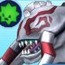
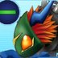

- 세대
- 궁극체
- 종족
 바이러스
바이러스- 속성
 풀
풀- 소비 메모리
- 18
- 장비 슬롯
- 3
스테이터스 (Lv.99)
HP212039위/98
SP12795위/98
ATK24232위/98
INT12888위/98
DEF2379위/98
SPD18958위/98
막대 길이는 등록된 디지몬 중 최고값 대비 비율이에요. 순위는 스테이터스가 등록된 디지몬끼리 비교해요.
필살기 1
디멘션 시저 풀 방어력 관통SP 35
적 1체물리위력 강한
디지몬 속성과 같음SS 보너스 +15%
적 1체에 풀속성 강한 위력 방어력 관통공격. 크리티컬이 발생하기 쉽다.
SS(서포트스킬)
네이처 스피리츠
풀속성 스킬의 대미지가 15% 증가한다.
계승기 (레벨업 습득) 5
이 디지몬이 레벨업으로 배우는 스킬이에요. 배운 스킬은 진화·퇴화해도 계속 쓸 수 있어요.
| 습득 Lv | 스킬 | 속성 | SP |
|---|---|---|---|
| 20 | 피지컬 드레인 적 1체에 무속성 위력 50의 물리공격을 하고 10%를 SP로 흡수한다. | 3 | |
| 35 | 크레센트 리프 III 적 1체에 풀속성 위력 105의 물리공격. 명중률 95%. | 9 | |
| 50 | 게일 스톰 II 적 전체에 바람속성 위력 45의 물리공격. 명중률 95%. | 7 | |
| 65 | 어택 브레이크 필드 적 전체의 공격력을 10% 내린다. | 20 | |
| 80 | 스피드 차지 필드 배틀멤버 전체의 민첩을 10% 올린다. | 20 |
이 디지몬이 강한 상대
상대 종족(세로)과 속성(가로)별로 이 디지몬의 공격 필살기 중 가장 높은 배율이에요. 칸에 마우스를 올리면 계산 근거가 보여요.
×3 이상×2 이상보통×1 미만
| 상대 ↓ / → | |||||||||
|---|---|---|---|---|---|---|---|---|---|
| 백신 | ×0.57 | ×0.86 | ×0.57 | ×0.57 | ×0.57 | ×0.57 | ×0.57 | ×0.57 | ×0.57 |
| 데이터 | ×2.30 | ×3.45 | ×2.30 | ×2.30 | ×2.30 | ×2.30 | ×2.30 | ×2.30 | ×2.30 |
| 바이러스 | ×1.15 | ×1.73 | ×1.15 | ×1.15 | ×1.15 | ×1.15 | ×1.15 | ×1.15 | ×1.15 |
| 프리 | ×1.15 | ×1.73 | ×1.15 | ×1.15 | ×1.15 | ×1.15 | ×1.15 | ×1.15 | ×1.15 |
등록된 디지몬 중 ×2 이상으로 공격할 수 있는 상대 80마리
궁극체 같은 세대 24 · 다른 세대 상대는 도감에서 볼 수 있어요.
디아나몬×3.45메탈가루몬×3.45메탈시드라몬×3.45플레시오몬×3.45간쿠몬×2.30그랜드로코몬×2.30그리폰몬×2.30나사몬×2.30돌고라몬×2.30두프트몬×2.30두프트몬LM×2.30두프트몬NX×2.30듀나스몬×2.30로제몬×2.30로제몬BM×2.30로터스몬×2.30미라쥬가오가몬×2.30미라쥬가오가몬BM×2.30샤벨레오몬×2.30샤크라몬×2.30제스몬×2.30쿠즈하몬×2.30파일볼케몬×2.30프린스콩알몬×2.30
진화 전 디지몬 (퇴화 가능) 5
아트라캅테리몬
- 이 디지몬을 발견한 적이 있다.

왕쿠가몬
- 이 디지몬을 발견한 적이 있다.
쥬레이몬
- 이 디지몬을 발견한 적이 있다.

다이노몬
- 이 디지몬을 발견한 적이 있다.
트리케라몬
- 이 디지몬을 발견한 적이 있다.
진화 가능 디지몬
더 이상 진화할 수 없어요.
진화 트리 · 그랜쿠가몬까지 오는 길
왼쪽부터 진화 순서예요. 선은 출발하는 디지몬의 색을 따라가요. 디지몬을 한 번 누르면 거기서 그랜쿠가몬까지 가는 경로만 남고, 한 번 더 누르면 그 디지몬 페이지로 이동해요. 회색 칸은 아직 정보가 없는 디지몬이에요.
유년기I
유년기II
성장기
성숙기
완전체
궁극체